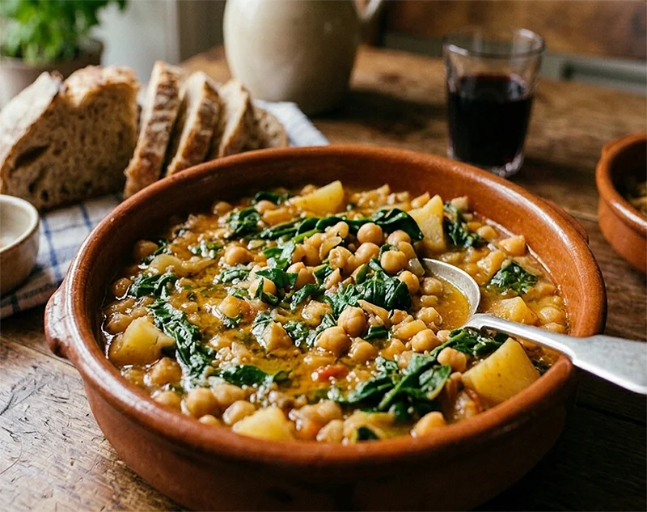

Receta saludable
Garbanzos con espinacas
Un plato tradicional, reconfortante y muy sabroso, perfecto para comer legumbres de forma sencilla.
Ingredientes
- 500 g de garbanzos cocidos
- 400 g de espinacas frescas o congeladas
- 3 dientes de ajo
- 1 rebanada de pan
- 1 cucharadita de pimentón dulce
- 1/2 cucharadita de comino molido
- 2 cucharadas de tomate triturado
- 1 cucharada de vinagre
- 100 ml de agua
- 3 cucharadas de aceite de oliva virgen extra
- Sal al gusto
Preparación
- Dora la rebanada de pan en una sartén con un poco de aceite y resérvala.
- En la misma sartén sofríe dos dientes de ajo. Añade el pimentón, el comino y el tomate triturado.
- Tritura el pan frito con ese sofrito y el vinagre hasta obtener una pasta espesa.
- En una cazuela aparte, saltea el ajo restante con un poco de aceite e incorpora las espinacas hasta que reduzcan.
- Añade los garbanzos, la pasta que has triturado y el agua. Mezcla bien.
- Cocina 5-10 minutos a fuego suave hasta que espese y los sabores se integren. Ajusta de sal y sirve caliente.
Consejo práctico
Si los haces de un día para otro ganan sabor, así que son muy buena opción para cocinar con antelación.